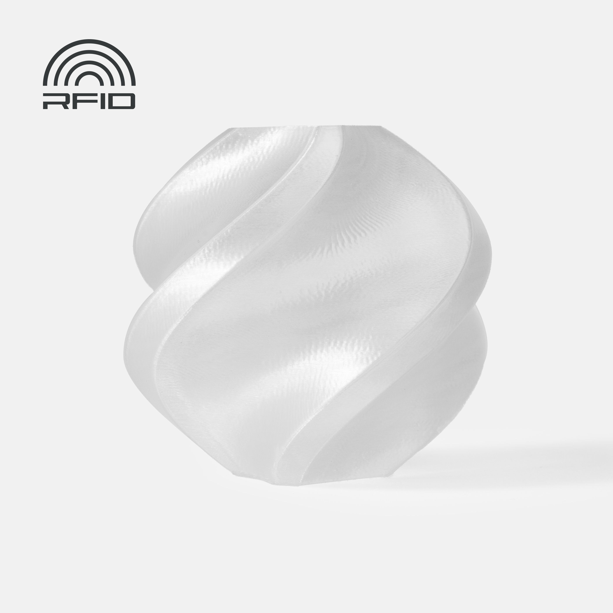

Alta temperatura
PC
El policarbonato es uno de los materiales más exigentes en escritorio. A cambio de esa dificultad ofrece resistencia térmica, impacto y rigidez muy superiores a los materiales comunes.

Resumen rápido
Dificultad
Alta. No es material para impresora abierta normalita y perfil genérico.
Uso típico
Piezas técnicas de alta exigencia térmica o mecánica.
Punto fuerte
Rendimiento estructural y térmico muy alto.
Punto débil
Necesita máquina capaz, secado y entorno estable.
Qué es
PC es una familia asociada a piezas resistentes, rígidas y con buena temperatura de servicio. En 3D suele reservarse para usuarios con hardware más preparado y objetivos técnicos concretos.
Tipos y variantes de PC
El policarbonato de impresión 3D suele aparecer modificado. La diferencia entre un PC fácil y un PC técnico real puede ser enorme.
PC estándar
Alta resistencia térmica e impacto, pero exige mucha temperatura, cama caliente y cámara. Es el más difícil de usar bien.
PC blend
Mezclas con aditivos o polímeros que reducen dificultad. Son más razonables en escritorio, aunque sus propiedades pueden ser inferiores.
PC-ABS
Blend clásico de ingeniería: combina parte de la resistencia del PC con procesado más cercano a ABS. Sigue pidiendo máquina cerrada.
PC-CF
Policarbonato con fibra de carbono. Aumenta rigidez y estabilidad, reduce warping relativo, pero necesita boquilla endurecida y hotend serio.
Temperaturas orientativas
| Parámetro | Rango habitual | Comentario |
|---|---|---|
| Boquilla | 260-310 °C | Muchos PC serios piden ir claramente por encima de materiales comunes. |
| Cama | 100-120 °C | La cama real importa tanto como el número mostrado. |
| Ventilación | Mínima | Se prioriza unión entre capas y estabilidad térmica. |
| Cámara cerrada | Casi obligatoria | Sin recinto, el éxito se reduce mucho en piezas útiles. |
Compatibilidad y hardware
- Hotend de alta temperatura real.
- Recinto o cámara caliente estable.
- Superficie y adhesivo adecuados para evitar levantamientos y daños en la lámina.
- Secado previo casi obligatorio para resultados serios.
Perfil base recomendado
PC no perdona perfiles improvisados. Antes de tocar detalles finos, confirma que la impresora alcanza la temperatura de forma estable y que la superficie no se va a dañar por exceso de adhesión.
| Ajuste | Punto de partida | Notas |
|---|---|---|
| Velocidad | 30-70 mm/s | Mejor empezar conservador y subir después. |
| Ventilador | 0-15% | Solo para puentes si el material lo permite. |
| Altura de capa | 0.16-0.24 mm | Capas demasiado finas pueden complicar el flujo. |
| Secado | Necesario | Imprimir húmedo falsea cualquier diagnóstico. |
Humedad y secado
PC también sufre mucho la humedad. Un carrete húmedo puede destruir acabado y propiedades. Aquí el secado no es una mejora opcional, sino parte del proceso.
Ventajas
- Muy buena resistencia térmica.
- Alta resistencia al impacto en formulaciones adecuadas.
- Potencial para piezas funcionales de mayor nivel.
Límites
- Difícil de imprimir en impresoras abiertas.
- Más coste y más exigencia en cada fase del flujo.
- No compensa si la pieza también podría resolverse con ASA, PETG o nylon amigable.
Usos recomendados
PC tiene sentido cuando el requisito de rendimiento es real, no solo aspiracional.
Problemas típicos
Warping fuerte, mala adhesión, grietas y acabado pobre por humedad o falta de cámara caliente. El problema rara vez se arregla “tocando un poco” el slicer si la máquina no llega.
Diagnóstico rápido
- Si cruje o burbujea al extruir, seca el material antes de ajustar nada.
- Si se despega, no subas temperatura sin revisar superficie, adhesivo y cerramiento.
- Si las capas se separan, baja ventilación, sube temperatura dentro de ficha y reduce velocidad.
- Si la pieza sale quebradiza, revisa humedad, temperatura real y orientación de carga.
PC en una Bambu A1
Una Bambu A1 abierta no es el entorno natural para policarbonato serio. Puede haber blends más amigables, pero si el objetivo es PC de verdad, el hardware manda y aquí se queda corto para uso consistente.
Cuándo elegirlo y cuándo no
Elige PC cuando necesitas propiedades térmicas y mecánicas muy altas y tienes máquina para sostenerlas.
No lo elijas por prestigio técnico: si la pieza vive bien en PETG, ASA o PA, probablemente el coste operativo de PC no compense.
Utilidad de la página